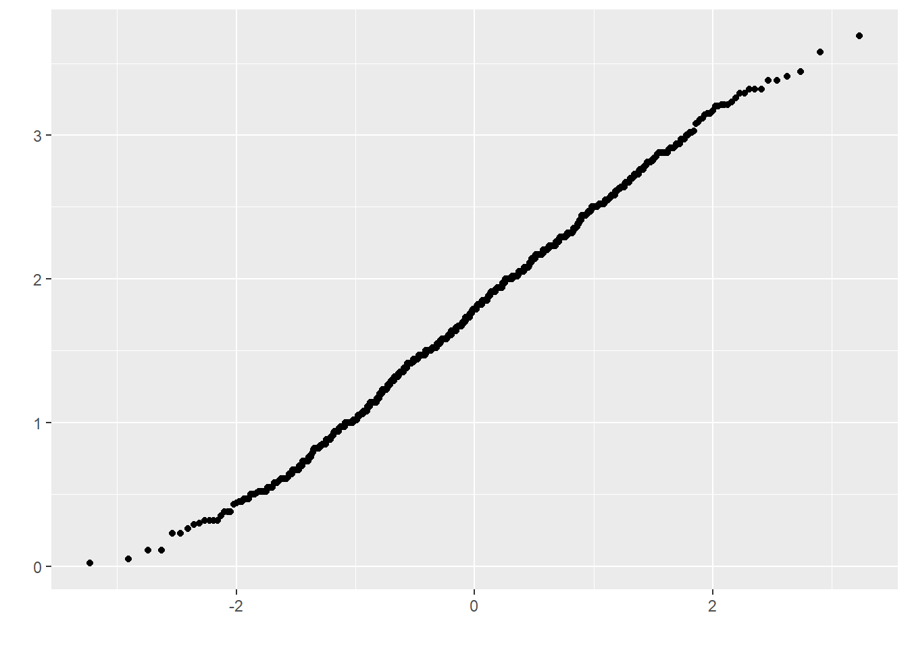
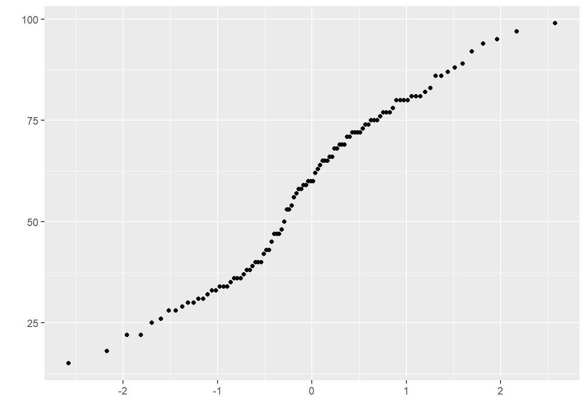

Capítulo 5 Caracterizar datos
En este capítulo vamos a revisar algunos elementos relacionados con la estadística inferencial. Para entender estas ideas primero vamos a hablar sobre como caracterizamos y visualizamos nuestros datos.
5.1 Visualizar los datos
Revisa este video (17’) y trata de responder:
- ¿Por qué es importante graficar los datos?
- ¿Cómo se calcula la desviación estándar?
- ¿Qué es la suma de cuadrados (o suma de los errores al cuadrado)?
5.2 La curva normal
Revisa este video (10’) y trata de responder:
- ¿Cómo se puede visualizar la “forma” de los datos?
- ¿Qué características tiene la curva normal?
- ¿Cómo estimamos cuantas observaciones caen entre dos valores para una set de datos?
- ¿Qué porcentaje de los datos esta entre -1 SD y 1 SD?
5.3 La curva normal en la práctica (1)
Revisa este video (8’) y trata de responder:
- ¿Cuantos vehículos anduvieron a exceso de velocidad? PAUSA el video para responder
- ¿Qué porcentaje de los datos esta entre -2 SD y 2 SD?
- ¿Qué porcentaje de los datos esta entre -2.5 SD y 2.5 SD?
5.4 La curva normal en la práctica (2)
Revisa este video (9’) y trata de responder:
- ¿Entre cuantas SD tenemos prácticamente todos los puntos de un set de datos?
- ¿Entre Linda y Bill quien saco mejor puntaje dentro de su cohorte? PAUSA el video para responder
5.5 De la muestra a la población
Revisa este video (17’) y trata de responder:
- ¿Qué significa generalizar nuestros hallazgos?
- ¿Qué son los parámetros?
- ¿Qué son los estadísticos?
- ¿Qué es la variación de la muestra (o sampling variation)?
- ¿Qué representa el promedio de los promedios de las muestras?
5.6 La muestra en la vida real
Revisa este video (10’) y trata de responder:
- ¿Qué pasa en la vida con respecto a la distribución de los promedios de las muestras?
- ¿Qué es el error estándar y como se calcula?
5.7 Los intervalos de confianza (1)
Revisa este video (13’) y trata de responder:
- ¿Cómo se calcula el SE?
- ¿Cómo se estima el promedio de la población?
- ¿Qué son los intervalos de confianza?
5.8 Los intervalos de confianza (2)
Revisa este video (6’) y trata de responder:
- ¿Qué significa que cálculemos un promedio con un intervalo de confianza al 68%?
- ¿Qué significa que cálculemos un promedio con un intervalo de confianza al 95%?
5.9 Verificar supuestos
Verificar los supuestos es un paso importante en la realización de un análisis estadístico. Los supuestos son condiciones que deben cumplirse para que los métodos estadísticos que se utilizan sean válidos. Si no se cumplen estos supuestos, los resultados del análisis pueden ser inexactos.
Algunas suposiciones comunes que a menudo se verifican en el análisis estadístico incluyen:
Normalidad: los datos deben tener una distribución normal, lo que significa que siguen una curva en forma de campana cuando se trazan en un gráfico.
Independencia: las observaciones deben ser independientes, lo que significa que una observación no debe afectar a otra.
Varianzas iguales: las varianzas de los diferentes grupos que se comparan deben ser iguales.
Linealidad: La relación entre las variables que se analizan debe ser lineal.
Para verificar estas suposiciones se pueden realizar gráficos (histogramas o diagramas de dispersión) y pruebas estadísticas (la prueba de normalidad de Shapiro-Wilk o la prueba de Levene para varianzas iguales).
Ahora vamos a hacer estos análisis. Primero seteamos nuestro directorio de trabajo y cargamos las librerías que necesitemos (si no las tienes instaladas debes instalarlas). Luego importamos el set de datos y le damos una mirada.
## Warning: package 'Hmisc' was built under R version 4.3.3##
## Attaching package: 'Hmisc'## The following objects are masked from 'package:plyr':
##
## is.discrete, summarize## The following object is masked from 'package:ggm':
##
## rcorr## The following objects are masked from 'package:base':
##
## format.pval, units## Warning: package 'reshape2' was built under R version 4.3.3##
## Attaching package: 'reshape2'## The following objects are masked from 'package:reshape':
##
## colsplit, melt, recast## Warning: package 'pastecs' was built under R version 4.3.3## Warning: package 'car' was built under R version 4.3.3## Loading required package: carData## Warning: package 'carData' was built under R version 4.3.3Para un estudio se investigaron los niveles de higiene de personas que asistieron a distintos días de un festival de música. Mientras más alto es el valor hay mayores niveles de higiene.
## ticknumb gender day1 day2 day3
## 1 2111 Male 2.64 1.35 1.61
## 2 2229 Female 0.97 1.41 0.29
## 3 2338 Male 0.84 NA NA
## 4 2384 Female 3.03 NA NA
## 5 2401 Female 0.88 0.08 NA
## 6 2405 Male 0.85 NA NAEn seguida podemos hacer un gráfico
## `stat_bin()` using `bins = 30`. Pick better value with `binwidth`.
Ya sabíamos de un antiguo capítulo que tenemos un outlier en esta base de datos. Para eliminarlo podemos usar la función ifelse. En esta función le decimos a R que todos los valores mayores a 20 se conviertan en 0.
Luego, hacer de nuevo un histograma.
## `stat_bin()` using `bins = 30`. Pick better value with `binwidth`.## Warning: Removed 1 row containing non-finite outside the scale range (`stat_bin()`).
En esta misma línea, podemos hacer unos ajustes. Podemos ajustar el eje Y para que se muestre la densidad (es sólo un re-escalamiento). Y podemos hacer el gráfico un poco mas claro.
hist.day1 <- ggplot(dlf, aes(day1)) +
labs(legend.position = "none") +
geom_histogram(aes(y = ..density..), colour = "black", fill = "white") +
labs(x = "Hygiene score on day 1", y = "Density") +
theme(panel.grid.major = element_blank(),
panel.grid.minor = element_blank(),
panel.background = element_blank(),
axis.line = element_line(colour = "black"))
hist.day1## Warning: The dot-dot notation (`..density..`) was deprecated in ggplot2 3.4.0.
## ℹ Please use `after_stat(density)` instead.
## This warning is displayed once every 8 hours.
## Call `lifecycle::last_lifecycle_warnings()` to see where this warning was generated.## `stat_bin()` using `bins = 30`. Pick better value with `binwidth`.## Warning: Removed 1 row containing non-finite outside the scale range (`stat_bin()`).Para evaluar la normalidad podemos superponer una curva normal (en rojo) que se base en el promedio y la dispersión de los datos.
hist.day1 +
stat_function(fun = dnorm,
args = list(mean = mean(dlf$day1, na.rm = TRUE),
sd = sd(dlf$day1, na.rm = TRUE)),
colour = "red", size = 1)## Warning: Using `size` aesthetic for lines was deprecated in ggplot2 3.4.0.
## ℹ Please use `linewidth` instead.
## This warning is displayed once every 8 hours.
## Call `lifecycle::last_lifecycle_warnings()` to see where this warning was generated.## `stat_bin()` using `bins = 30`. Pick better value with `binwidth`.## Warning: Removed 1 row containing non-finite outside the scale range (`stat_bin()`).
Para este set de datos la distribución de los datos se ve bastante normal si lo comparamos con la línea. Otra manera gráfica de revisar la normalidad es hacer un gráfico Q-Q
## Warning: `qplot()` was deprecated in ggplot2 3.4.0.
## This warning is displayed once every 8 hours.
## Call `lifecycle::last_lifecycle_warnings()` to see where this warning was generated.## Warning: Removed 1 row containing non-finite outside the scale range (`stat_qq()`).
Si los datos están normalmente distribuidos deberíamos ver una línea diagonal contínua.
Además de observar gráficamente podemos aplicar analisis de normalidad. Por ejemplo, usando la función stat.desc podemos describir los datos y testear la normalidad. Debemos fijarnos en el valor de p del test (“normtest.p”). Si es significativo significa que los datos no poseen una distribución normal.
## median mean SE.mean CI.mean.0.95 var std.dev coef.var skewness skew.2SE
## 1.790000000 1.770828183 0.024396670 0.047888328 0.481514784 0.693912663 0.391857702 -0.003155393 -0.018353763
## kurtosis kurt.2SE normtest.W normtest.p
## -0.423991408 -1.234611514 0.995907065 0.031838626Podemos aplicar esta función a varias columnas al mismo tiempo.
## V1 V2 V3
## median 1.790000000 7.900000e-01 7.600000e-01
## mean 1.770828183 9.609091e-01 9.765041e-01
## SE.mean 0.024396670 4.436095e-02 6.404352e-02
## CI.mean.0.95 0.047888328 8.734781e-02 1.267805e-01
## var 0.481514784 5.195239e-01 5.044934e-01
## std.dev 0.693912663 7.207801e-01 7.102770e-01
## coef.var 0.391857702 7.501022e-01 7.273672e-01
## skewness -0.003155393 1.082811e+00 1.007813e+00
## skew.2SE -0.018353763 3.611574e+00 2.309035e+00
## kurtosis -0.423991408 7.554615e-01 5.945454e-01
## kurt.2SE -1.234611514 1.264508e+00 6.862946e-01
## normtest.W 0.995907065 9.083191e-01 9.077516e-01
## normtest.p 0.031838626 1.281630e-11 3.804486e-07Y podemos definir el número de cifras significativas para tener una tabla mas leíble.
## day1 day2 day3
## median 1.790 0.790 0.760
## mean 1.771 0.961 0.977
## SE.mean 0.024 0.044 0.064
## CI.mean.0.95 0.048 0.087 0.127
## var 0.482 0.520 0.504
## std.dev 0.694 0.721 0.710
## coef.var 0.392 0.750 0.727
## skewness -0.003 1.083 1.008
## skew.2SE -0.018 3.612 2.309
## kurtosis -0.424 0.755 0.595
## kurt.2SE -1.235 1.265 0.686
## normtest.W 0.996 0.908 0.908
## normtest.p 0.032 0.000 0.000Utlizar esta función es equivalente a usar la función shapiro.test.
##
## Shapiro-Wilk normality test
##
## data: dlf$day1
## W = 0.99591, p-value = 0.03184veamos otra base de datos para destacar un aspecto importante de este análisis.
Para este otro estudio se investigaron distintos dominios de conocimiento y hábitos en una cohorte de estudiantes: desempeño en los examenes (exam), habilidades computacionales (computer), número de clases asistidas (lectures) y habilidad númerica (numeracy). Esta medición se realizó en 2 instituciones diferentes (uni).
rexam <- read.delim("data/rexam.dat", header = TRUE)
rexam$uni <- factor(rexam$uni, levels = c(0:1),
labels = c("Duncetown University", "Sussex University"))
head(rexam)## exam computer lectures numeracy uni
## 1 18 54 75.0 7 Duncetown University
## 2 30 47 8.5 1 Duncetown University
## 3 40 58 69.5 6 Duncetown University
## 4 30 37 67.0 6 Duncetown University
## 5 40 53 44.5 2 Duncetown University
## 6 15 48 76.5 8 Duncetown UniversityPrimero graficamos.
hexam <- ggplot(rexam, aes(exam)) +
labs(legend.position = "none") +
geom_histogram(aes(y = ..density..), colour = "black", fill = "white") +
labs(x = "Exam", y = "Density") +
theme(panel.grid.major = element_blank(),
panel.grid.minor = element_blank(),
panel.background = element_blank(),
axis.line = element_line(colour = "black"))
hexam## `stat_bin()` using `bins = 30`. Pick better value with `binwidth`.
El gráfico sugiere que los valores de desempeño en los examenes no siguen una distribución normal.
Nuevamente para evaluar la normalidad podemos superponer una curva normal (en rojo) que se base en el promedio y la dispersión de los datos.
hexam +
stat_function(fun = dnorm,
args = list(mean = mean(rexam$exam, na.rm = TRUE),
sd = sd(rexam$exam, na.rm = TRUE)),
colour = "red", size = 1)## `stat_bin()` using `bins = 30`. Pick better value with `binwidth`.
De hecho parece que hubieran una distribución bimodal, perteneciente a distribuciones de dos grupos diferentes.
Veamos el gráfico Q-Q.

Describamos los datos y apliquemos un analisis de normalidad con la función stat.desc. Debemos fijarnos en el valor de p del test (“normtest.p”). Si es significativo significa que los datos no poseen una distribución normal.
round(stat.desc(rexam[, c("exam",
"computer",
"lectures",
"numeracy")],
basic = FALSE, norm = TRUE),
digits = 2) ## exam computer lectures numeracy
## median 60.00 51.50 62.00 4.00
## mean 58.10 50.71 59.76 4.85
## SE.mean 2.13 0.83 2.17 0.27
## CI.mean.0.95 4.23 1.64 4.30 0.54
## var 454.35 68.23 470.23 7.32
## std.dev 21.32 8.26 21.68 2.71
## coef.var 0.37 0.16 0.36 0.56
## skewness -0.10 -0.17 -0.41 0.93
## skew.2SE -0.22 -0.35 -0.85 1.93
## kurtosis -1.15 0.22 -0.28 0.76
## kurt.2SE -1.20 0.23 -0.30 0.80
## normtest.W 0.96 0.99 0.98 0.92
## normtest.p 0.00 0.44 0.08 0.00En este punto es importante destacar que todos estos análisis dependen netamente de la pregunta de investigación. En el caso que queramos comparar el desempeño en los examenes entre las 2 instituciones académicas entonces lo que importa es la distribución de los valores dentro de cada grupo.
Para hacer una descripción de los datos por grupo podemos usar la función by.
## rexam$uni: Duncetown University
## dd[x, ]
## n missing distinct Info Mean Gmd .05 .10 .25 .50 .75 .90 .95
## 50 0 33 0.999 40.18 14.41 22.00 25.90 31.25 38.00 47.75 59.00 61.65
##
## lowest : 15 18 22 25 26, highest: 59 60 63 65 66
## ------------------------------------------------------------------------------------------
## rexam$uni: Sussex University
## dd[x, ]
## n missing distinct Info Mean Gmd .05 .10 .25 .50 .75 .90 .95
## 50 0 30 0.998 76.02 11.64 60.00 63.80 69.00 75.00 81.00 89.30 94.55
##
## lowest : 56 58 60 62 64, highest: 92 94 95 97 99## rexam$uni: Duncetown University
## nbr.val nbr.null nbr.na min max range sum median mean
## 50.0000000 0.0000000 0.0000000 15.0000000 66.0000000 51.0000000 2009.0000000 38.0000000 40.1800000
## SE.mean CI.mean.0.95 var std.dev coef.var
## 1.7803210 3.5776890 158.4771429 12.5887705 0.3133094
## ------------------------------------------------------------------------------------------
## rexam$uni: Sussex University
## nbr.val nbr.null nbr.na min max range sum median mean
## 50.0000000 0.0000000 0.0000000 56.0000000 99.0000000 43.0000000 3801.0000000 75.0000000 76.0200000
## SE.mean CI.mean.0.95 var std.dev coef.var
## 1.4432079 2.9002348 104.1424490 10.2050208 0.1342413También se pueden describir simultáneamente varias variables.
by(rexam[, c("exam", "computer", "lectures", "numeracy")],
rexam$uni,
stat.desc,
basic = FALSE,
norm = TRUE)## rexam$uni: Duncetown University
## exam computer lectures numeracy
## median 38.0000000 49.0000000 60.5000000 4.00000000
## mean 40.1800000 50.2600000 56.2600000 4.12000000
## SE.mean 1.7803210 1.1410021 3.3619491 0.29226770
## CI.mean.0.95 3.5776890 2.2929295 6.7560897 0.58733393
## var 158.4771429 65.0942857 565.1351020 4.27102041
## std.dev 12.5887705 8.0681030 23.7725704 2.06664472
## coef.var 0.3133094 0.1605273 0.4225484 0.50161280
## skewness 0.2906760 0.2121230 -0.2904291 0.48165960
## skew.2SE 0.4317816 0.3150960 -0.4314149 0.71547621
## kurtosis -0.7230849 -0.6779460 -0.5634849 -0.65166313
## kurt.2SE -0.5462122 -0.5121147 -0.4256518 -0.49226083
## normtest.W 0.9721662 0.9776351 0.9697413 0.94081692
## normtest.p 0.2828984 0.4571105 0.2259072 0.01451518
## ------------------------------------------------------------------------------------------
## rexam$uni: Sussex University
## exam computer lectures numeracy
## median 75.0000000 54.00000000 65.7500000 5.000000000
## mean 76.0200000 51.16000000 63.2700000 5.580000000
## SE.mean 1.4432079 1.20284018 2.6827191 0.434332704
## CI.mean.0.95 2.9002348 2.41719783 5.3911258 0.872824247
## var 104.1424490 72.34122449 359.8490816 9.432244898
## std.dev 10.2050208 8.50536445 18.9696885 3.071196004
## coef.var 0.1342413 0.16625028 0.2998212 0.550393549
## skewness 0.2559866 -0.50635339 -0.3429407 0.746369109
## skew.2SE 0.3802527 -0.75215735 -0.5094177 1.108686183
## kurtosis -0.4609644 0.96404781 -0.4233827 -0.006440059
## kurt.2SE -0.3482086 0.72823358 -0.3198197 -0.004864766
## normtest.W 0.9837115 0.94392221 0.9817164 0.932346126
## normtest.p 0.7151182 0.01931372 0.6262649 0.006786803Estos análisis son equivalentes a usar la función shapiro.test. Nuevamente, dependiendo de la pregunta de investigación miramos la normalidad de todos los datos de desempeño en el examen.
##
## Shapiro-Wilk normality test
##
## data: rexam$exam
## W = 0.96131, p-value = 0.004991O miramos los datos de desempeño en el examen en función de los grupos.
## rexam$uni: Duncetown University
##
## Shapiro-Wilk normality test
##
## data: dd[x, ]
## W = 0.97217, p-value = 0.2829
##
## ------------------------------------------------------------------------------------------
## rexam$uni: Sussex University
##
## Shapiro-Wilk normality test
##
## data: dd[x, ]
## W = 0.98371, p-value = 0.7151Para graficar podemos separar los datos en función de las instituciones.
dunceData <- rexam[rexam$uni=="Duncetown University",]
sussexData <- rexam[rexam$uni=="Sussex University",]Luego podemos graficar por ejemplo los valores en el desempeño del examen para una de las instituciones.
hist.exam.duncetown <- ggplot(dunceData, aes(exam)) +
theme(legend.position = "none") +
geom_histogram(aes(y = ..density..), fill = "white", colour = "black", binwidth = 1) +
labs(x = "Numeracy Score", y = "Density") +
labs(title = "Duncetown") +
stat_function(fun=dnorm,
args=list(mean = mean(dunceData$exam, na.rm = TRUE),
sd = sd(dunceData$exam, na.rm = TRUE)),
colour = "red", size=1)
hist.exam.duncetownOtro supuesto que debemos testear es la homogenidad de la varianza. Para ello aplicamos un test de Levene.
## Levene's Test for Homogeneity of Variance (center = median)
## Df F value Pr(>F)
## group 1 2.0886 0.1516
## 98Nuevamente si no hay una diferencia significativa estamos Ok.